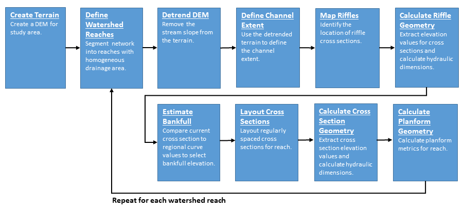

Chapter 3 Workflow
This chapter provides an overview of some of the workflows that can be used to perform a rapid watershed assessment using FluvialGeomorph.
- Provide roadmap or overview of the stages users need to take.
- Help orient users with overview to give them the big picture before throwing them into the details.
- Describe the forest (workflow) before describing the trees (geoprocessing).
- Why each Stage is important
- Describe Stages, Steps, Tasks and Tools
3.1 Workflow Overview
Provide a narrative overview of the workflow.

Figure 3.1: Workflow Diagram
3.2 Workflow Stages
Describe how the workflow is divided into stages and each stage contains steps.
3.2.1 Create Terrain
- What will be accomplished for each stage?
- Describe how previous stage (outputs) flows into the current stage (inputs).